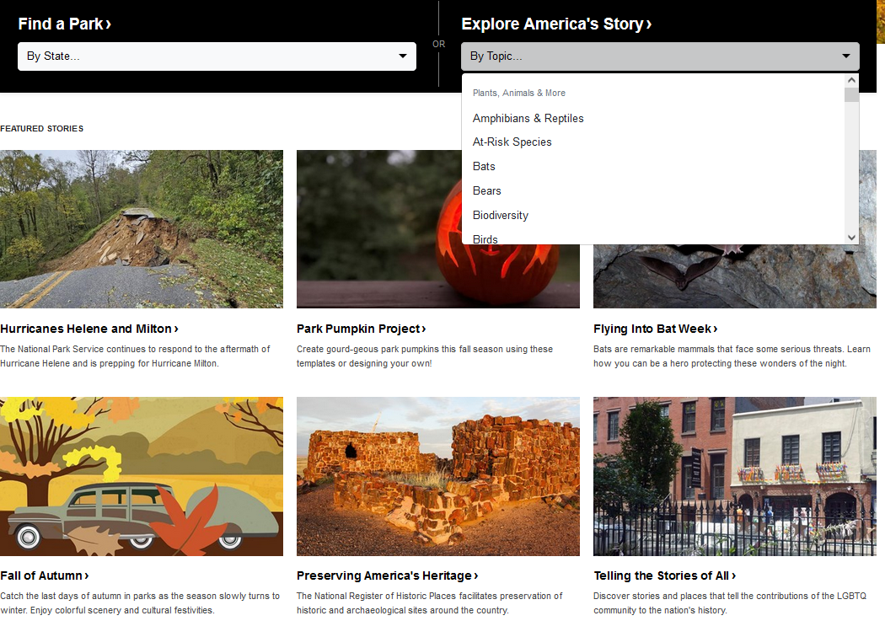
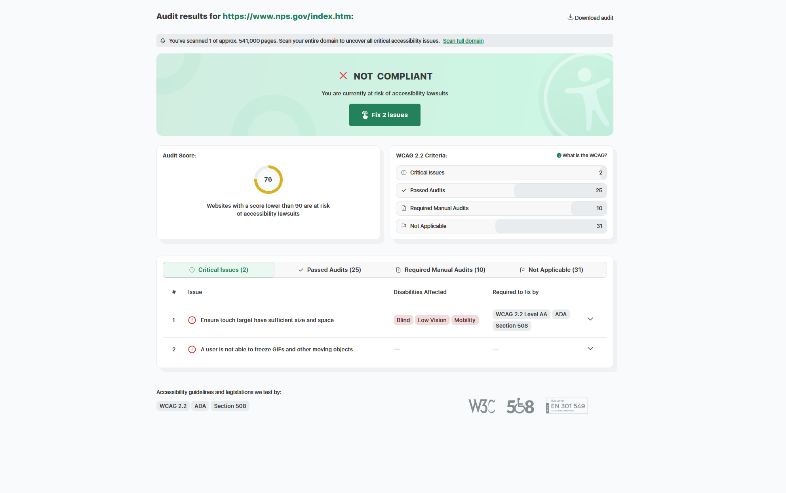

What is the site?
The site chosen for this lab was the National Park Service; in particular, their page on rocks, which is navigated to through their section on Geology. The site can be found here, and it has basic information about different National Parks, plants, animals, and nature in general. There are various pages that users navigate through to get more detail as well.

Lab Questions
Below are some general questions about the site, its structure, and its effectiveness:
- What is the URL?
- https://www.nps.gov/index.htm
- What is the name of the website?
- National Park Service
- Who is the site's target audience?
- The target audience is any person either interested in visiting one of the United States' National Parks, or those simply looking to learn more about nature.
- How is the site organized?
- The site has hierarchal structure. There is a clear (albeit relatively bland) homepage, links to other major sections, and it even contains an cateogorized section of topics, with alphabetized listings. This assists in getting to parts of the site quicker, depending on what the user is looking for. 
- Which CRAP principle is used? One example?
- Once example of CRAP principle is Repetition. Many boxes are used and placed in the same way for images. In addition to this, when viewing any pages on specific topics, there are bolded titles, followed by some paragraphs and bullet points that relay the information.
- What is the Audit Score?
- The audit score is 76. 
- What is the site's effectiveness? Can users complete actions accurately?
- The site is effective. The links work, and with the exception of some missing videos, the content is all accessible and takes you where you would expect it to. The accuracy of actions is not the issue with the site.
- What is the site's efficiency? Can users perform tasks quickly?
- The site seems to be fairly efficient. There are no noticable moments of slow loading, or instances where it is difficult to traverse the pages.
- How is the engagement? Is it pleasant to use and appropriate for its topic?
- The site is decent with its engagement. It does an ok job of enticing the user, but it could do a little more to not only provide information, but make that information interesting to learn about. As it is, the site is too flat, and not all that engaging or interesting to read through. Additionally, as an informational site, the level of information is too borad, and only gives some basic information. That wouldn't be as much of a problem if some of the sections were more detailed, and provided more things such as videos for different learning types.
- Make one recommendation to improve the website.
- One thing that could be improved would be some of the site's presentation, particularly through solid contrast. The site does its job fairly well, but it's just not intriguing to look at. As such, it can seem as though one is searching through the same page repeatedly, and it costs some of the engagement. These National Parks and nature in general should be fun and interesting to learn about, but the site doesn't make enough use of good imagery, color contrast, unique shapes, textures or placement to really catch the user's eye. Simply implementing solid contrast would go a long way in making it more visually appealing.